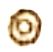

Obra: Facsímile de un Plano de la Ciudad de Guadalajara de 1800.
Dedicado a: Ilustrísimo Señor Don Juan Cruz Ruiz de Cabañas y Crespo, Obispo de la Diócesis de Guadalajara.
Autoría: Anónima (Atribuido a la escuela de agrimensores de la Intendencia de Guadalajara).
Técnica: Dibujo a pluma e iluminado (reproducción facsimilar).
Descripción: Este plano es un testimonio cartográfico fundamental de la Guadalajara virreinal tardía, capturando la fisonomía de la ciudad justo antes de las transformaciones del siglo XIX. La obra detalla con precisión la consolidación de la traza española y su interacción con los barrios indígenas circundantes, registrando la ubicación de los principales complejos conventuales, colegios y edificios administrativos que funcionaban como ejes del poder político y espiritual en la Nueva Galicia.
Este sitio web es un proyecto de divulgación histórica y educativa, no pretende ser un recurso de consulta académica o técnica definitiva. Los datos y ubicaciones presentados se basan en la interpretación del Facsímile de un Plano de la Ciudad de Guadalajara como se hallaba en el año de 1800, dedicado al Obispo Juan Cruz Ruiz de Cabañas.
Aunque se ha buscado la mayor precisión posible en la digitalización de los 37 puntos de interés, el urbanismo de la época y la hidrografía del Río San Juan de Dios (referenciado con el número 36) pueden presentar variaciones respecto a la cartografía moderna.
Se recomienda a investigadores y estudiantes consultar fuentes primarias en archivos oficiales para trabajos de rigor científico.

https://arquidiocesisgdl.org/boletin/2023-1-5.phphttps://www.scielo.org.mx/scielo.php?script=sci_arttext&pid=S0185-12762012000200004
https://sc.jalisco.gob.mx/sites/sc.jalisco.gob.mx/files/guia_arquitectonica1.pdf pag. 53
https://issuu.com/semanario-gdl/docs/hoja_parroquial_12-_iv_dom._de_cuaresma._ciclo_a/s/21090735
https://arquidiocesisgdl.org/boletin/2020-10-12.php
https://guadalajara.gob.mx/turismo/hospital
https://campaners.com/php/campanar.php?numer=13217
https://70mixtahistoriaycultura.blogspot.com/2013/06/
Efemerides históricas de Guadalajara. Martín González Guzmán. pag. 61
Efemerides históricas de Guadalajara. Martín González Guzmán. pag. 445
Efemerides históricas de Guadalajara. Martín González Guzmán. pag. 103
Efemerides históricas de Guadalajara. Martín González Guzmán. pag. 196
Efemerides históricas de Guadalajara. Martín González Guzmán. pag. 213
https://inba.gob.mx/recinto/390
https://www.scielo.org.mx/pdf/hm/v75n1/2448-6531-hm-75-01-396.pdf
https://revisionesgdl.com/2021/08/11/los-5-templos-mas-antiguos-de-guadalajara/
Efemerides históricas de Guadalajara. Martín González Guzmán. pag. 552
https://revisionesgdl.com/2021/08/11/los-5-templos-mas-antiguos-de-guadalajara/
Efemerides históricas de Guadalajara. Martín González Guzmán. pag. 539
Efemerides históricas de Guadalajara. Martín González Guzmán. pag. 170
https://catalogonacionalmhi.inah.gob.mx/consulta_publica/detalle/26843
Efemerides históricas de Guadalajara. Martín González Guzmán. pag. 134
https://programadestinosmexico.com/templo-de-la-merced-nuestra-senora-de-las-mercedes-guadalajara/
https://guadalajaraayeryhoy.blogspot.com/2011/08/plaza-de-las-sombrillas.html
https://memoricamexico.gob.mx/swb/memorica/Cedula?oId=V2RahHwBnLj3hRpSWuLq
https://enciclopedia.udg.mx/articulos/colegio-de-san-juan-bautista
https://riudg.udg.mx/bitstream/20.500.12104/73639/1/BCUAAD00026.pdf
https://www.wikiwand.com/es/articles/Real_F%C3%A1brica_de_Puros_y_Cigarros_de_M%C3%A9xico
https://www.informador.mx/cultura/El-Real-Consulado-de-Guadalajara-20250302-0022.html
https://www.informador.mx/Suplementos/Habia-una-vez...-La-Alameda-y-El-paseo-20090515-0002.html
https://guadalajaraayeryhoy.blogspot.com/2013/12/tlaquepaque.html
https://www.youtube.com/watch?v=MCYkY0ad8sQ
https://bientapatios.blogspot.com/2010/05/historia-tapatia-el-puente-de-medrano.html
Descripcion de la ciudad de Guadalajara. Mariano de la Bárcena. Pag 58.
El acueducto de Guadalajara y la obra de fray Pedro Antonio de Buzeta en España y Nueva España. Álvaro Recio Mir. Revista de Indias. Pag 724, 741.